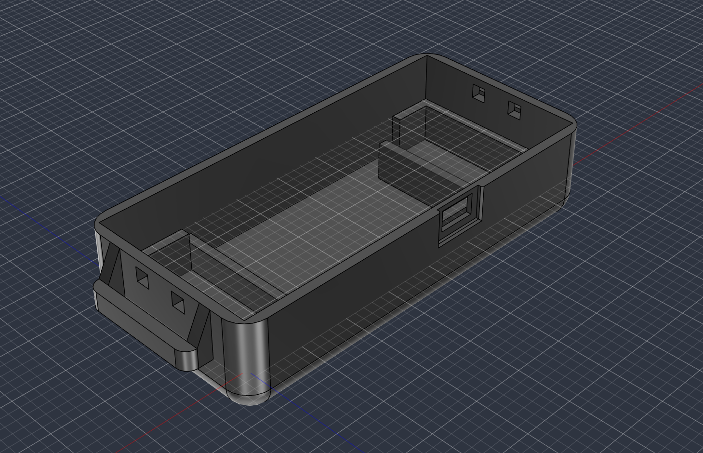
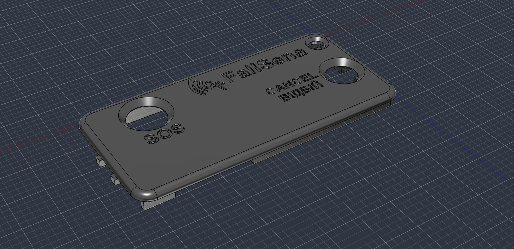
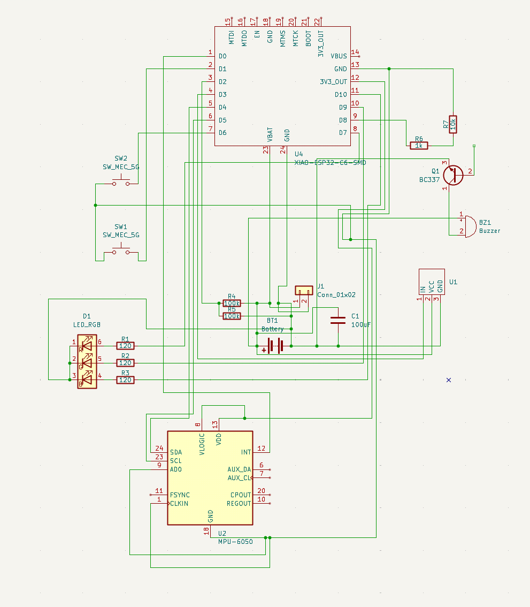
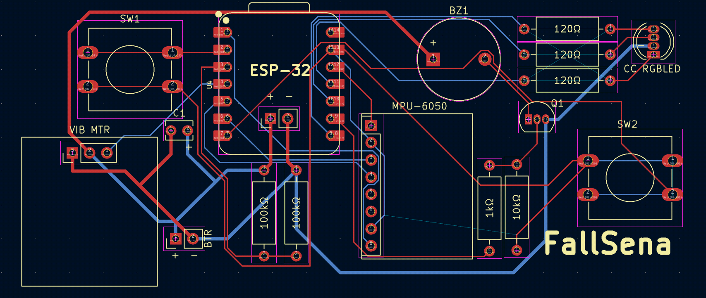
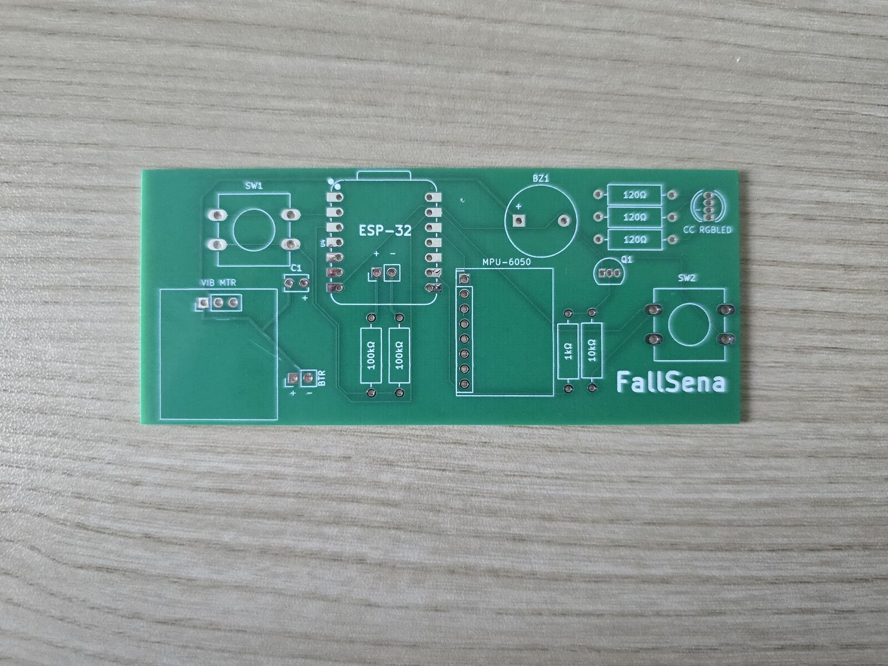
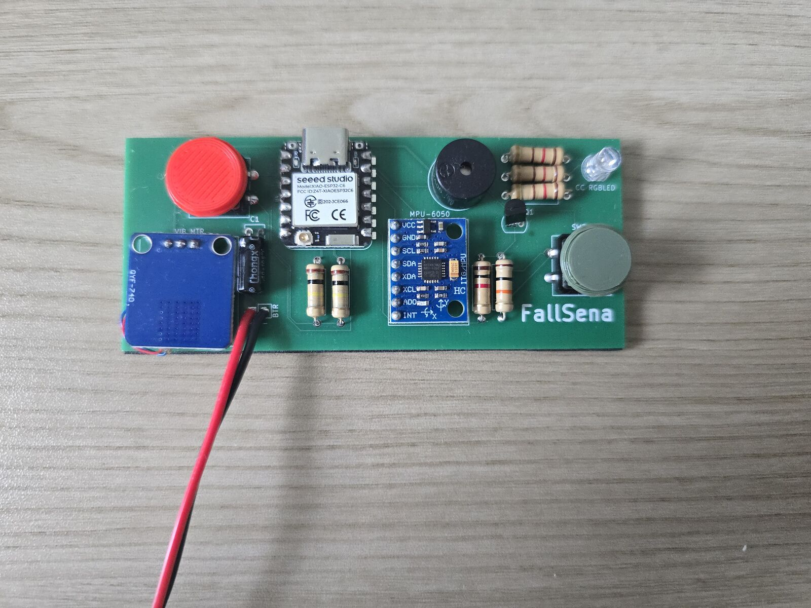
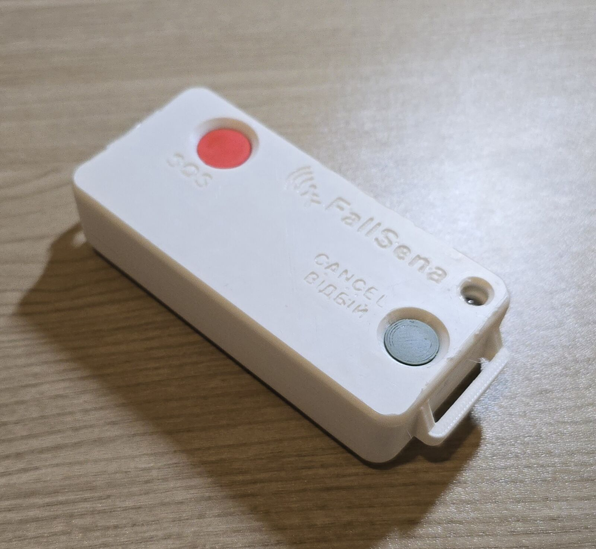

Как создавался FallSena
FallSena представляет собой носимое устройство для обнаружения падений, построенное на микроконтроллере ESP32-C6 (Wi-Fi и Bluetooth Low Energy) и датчике движения MPU6050. Оно носится на поясе, отслеживает падения, даёт пользователю короткое окно для отмены ложной тревоги, а если тревогу не отменили, оповещает приложение опекуна на его телефоне.
Идея FallSena родилась из тревоги, знакомой многим семьям: что близкий человек может упасть и не получить помощь вовремя. Устройство создано, чтобы сократить это ожидание, как можно скорее уведомляя опекуна через его телефон.


3D-моделирование корпуса
Корпус состоит из двух частей: основания, в котором размещается электроника, и крышки, которая его закрывает. В крышке предусмотрены отверстия для кнопки SOS и кнопки отмены (с надписью «ВІДБІЙ»), а весь корпус сделан компактным, чтобы его можно было носить на поясе.
Обе части были смоделированы в Fusion 360, причём логотип FallSena и надписи кнопок смоделированы прямо на поверхности крышки.
На рендерах обе части показаны в том виде, в каком они были смоделированы: открытое основание корпуса и крышка с отверстиями для кнопок.


Проектирование печатной платы
Собственная печатная плата объединяет все компоненты FallSena на одной плате, размеры которой подобраны так, чтобы она помещалась в основание корпуса, носимого на поясе.
В основе платы лежат микроконтроллер ESP32-C6 для Wi-Fi и Bluetooth Low Energy, датчик движения MPU6050, подключённый по I2C, RGB-светодиод состояния, вибромотор монетного типа, кнопка SOS и кнопка отмены, а также LiPo-аккумулятор 3,7 В на 1000 мА·ч со схемой делителя напряжения для измерения уровня заряда.
И принципиальная схема, и разводка платы выполнены в KiCad. В разводке компоненты расположены вдоль одной длинной узкой платы, а у каждого её конца находится по кнопке.


Пайка и сборка
Ещё до пайки компонентов на чистой плате уже нанесены контуры и обозначения каждого компонента, а также название FallSena.
Затем каждый компонент был припаян на своё место, а аккумулятор подключён парой проводов: красным и чёрным.
Готовая плата устанавливается в основание корпуса так, что две её кнопки совпадают с отверстиями в крышке.

Готовый продукт
В собранном виде FallSena представляет собой небольшое устройство, которое носится на поясе, отслеживает падения, даёт пользователю короткое окно для отмены ложной тревоги, а если тревогу не отменили, оповещает приложение опекуна на его телефоне.
Что дальше
Следующий шаг: испытания с контролируемым падением для точной настройки порога обнаружения падений, а также проверка того, что оповещение опекуна приходит за считанные секунды. Кроме того, для продления работы от аккумулятора планируется глубокий сон с пробуждением по движению, а также выпуск приложения опекуна для iOS.